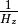
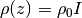
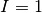
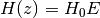
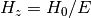
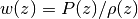
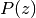
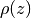
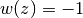

Bases: astropy.cosmology.core.FLRW
FLRW cosmology with a cosmological constant and curvature.
This has no additional attributes beyond those of FLRW.
| Parameters: | H0 : float or astropy.units.Quantity
Om0 : float
Ode0 : float
Tcmb0 : float or astropy.units.Quantity
Neff : float
m_nu : astropy.units.Quantity
name : str
|
|---|
Examples
>>> from astropy.cosmology import LambdaCDM
>>> cosmo = LambdaCDM(H0=70, Om0=0.3, Ode0=0.7)
The comoving distance in Mpc at redshift z:
>>> z = 0.5
>>> dc = cosmo.comoving_distance(z)
Methods Summary
| de_density_scale(z) | Evaluates the redshift dependence of the dark energy density. |
| efunc(z) | Function used to calculate H(z), the Hubble parameter. |
| inv_efunc(z) | Function used to calculate . |
| w(z) | Returns dark energy equation of state at redshift z. |
Methods Documentation
Evaluates the redshift dependence of the dark energy density.
| Parameters: | z : array_like
|
|---|---|
| Returns: | I : ndarray, or float if input scalar
|
Notes
The scaling factor, I, is defined by , and in this case is given by .
Function used to calculate H(z), the Hubble parameter.
| Parameters: | z : array_like
|
|---|---|
| Returns: | E : ndarray, or float if input scalar
|
Notes
The return value, E, is defined such that .
Function used to calculate .
| Parameters: | z : array_like
|
|---|---|
| Returns: | E : ndarray, or float if input scalar
|
Notes
The return value, E, is defined such that .
Returns dark energy equation of state at redshift z.
| Parameters: | z : array_like
|
|---|---|
| Returns: | w : ndarray, or float if input scalar
|
Notes
The dark energy equation of state is defined as , where  is the pressure at redshift z and  is the density at redshift z, both in units where c=1. Here this is .